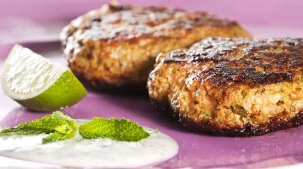

Learn how to make Dahi Kebab with our easy-to-follow recipe.

Price : 100/-
Nutrition
kcal
fat
saturates
carbs
sugar
fibre
protein
salt
260
30g
9g
15g
8g
0.5g
15g
0.3g
Ingrediants:
2 cups curd / yogurt, thick and fresh
1 cup paneer, crumbled1 cup paneer, crumbled
½ small onion, finely chopped½ small onion, finely chopped
1 inch ginger, finely chopped1 inch ginger, finely chopped
1 green chili, finely chopped1 green chili, finely chopped
2 tbsp coriander leaves, finely chopped2 tbsp coriander leaves, finely chopped
2 tbsp dry fruits, cashews, almonds, chopped2 tbsp dry fruits, cashews, almonds, chopped
salt to tastesalt to taste
½ tsp pepper, crushed½ tsp pepper, crushed
¼ cup bread crumbs¼ cup bread crumbs
2 tbsp corn flour, to dust patties2 tbsp corn flour, to dust patties
oil for deep fryingoil for deep frying
Method
Step 1: firstly, take thick and creamy curd (hung curd).
Step 2: further add 1 cup crumbled paneer.
Step 3: also add onion, ginger, chili, coriander leaves and dry fruits.
Step 4: additionally add salt and crushed pepper.
Step 5: also add bread crumbs to remove excess moisture.
Step 6: mix well making sure the paneer and hung curd are combined well.
Step 7: do not over knead as curd will start releasing moisture.
Step 8: if the dough is too sticky, then add a tsp more of breadcrumbs to absorb moisture.
Step 9: grease both the hand with oil and prepare a ball sized patties.
Step 10: coat the patties with corn flour to remove excess moisture.
Step 11: now deep fry the patties in hot oil. else the curd will melt and create a mess in oil.
Step 12: fry on medium flame, stirring occasionally.
Step 13: fry till the patties or kabab turns golden brown.
Step 14: drain the kebab into kitchen paper to remove excess oil.
Step 15: finally, serve dahi ke kabab with pudina chutney or sauce.